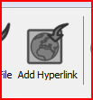
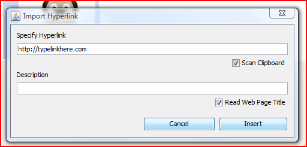
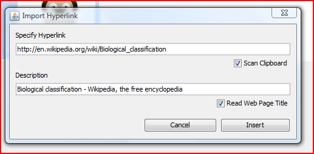
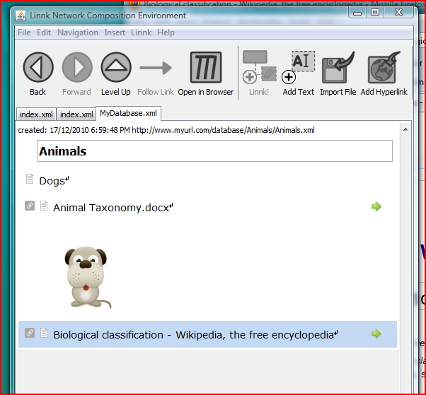

Hyperlinks to webpages or local resources can be added using the [Add Hyperlink] toolbar button.

You can either manually specify the hyperlink ...

... or just select and copy a hyperlink in another application (such as your web browser) and let Linnk pick up the link in the clipboard.

The hyperlink will be added to the document. Clicking on it will open the hyperlink using the default application associated with it (for web pages, this will be your default browser).
